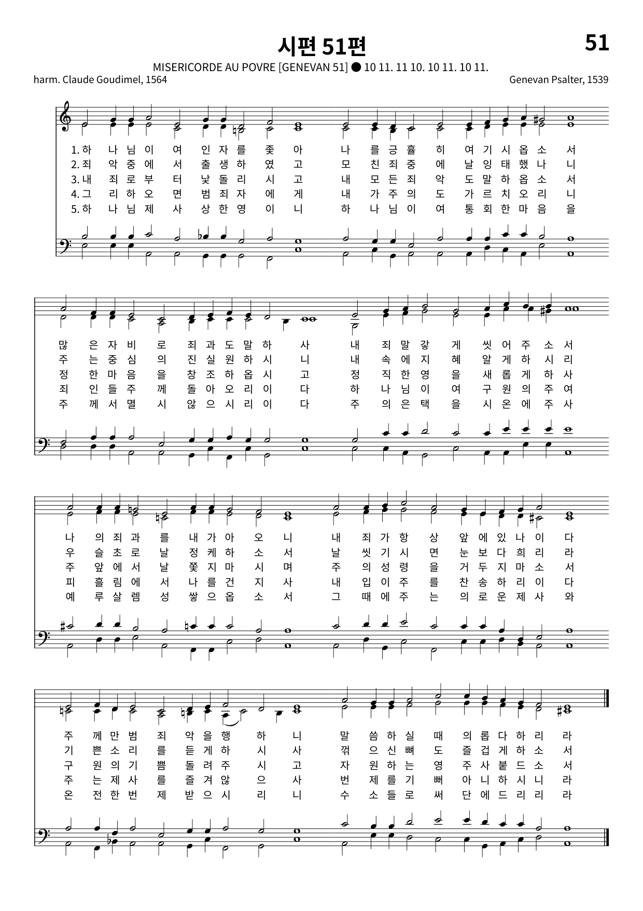

시편 51편
MISERICORDE AU POVRE [GENEVAN 51] · 10 11. 11 10. 10 11. 10 11.
곡조: Genevan Psalter, 1539 · 화성: Claude Goudimel, 1564 · 가사: 개역한글판 시편 51편 편역(AI 초벌 편역판 · 신학 감수 전) · 5절
악보 PDF MusicXML(출력용) MusicXML(반주용, 전주·반복 포함) 개역한글 시편 51편 읽기
악보
← 시편 50편 B 목록반주 재생(준비 중)시편 52편 →
가사
1절 (시편 1~4절)
하나님이여 인자를 좇아
나를 긍휼히 여기시옵소서
많은 자비로 죄과 도말하사
내 죄 말갛게 씻어 주소서
나의 죄과를 내가 아오니
내 죄가 항상 앞에 있나이다
주께만 범죄 악을 행하니
말씀하실 때 의롭다 하리라
하나님이여 인자를 좇아
나를 긍휼히 여기시옵소서
많은 자비로 죄과 도말하사
내 죄 말갛게 씻어 주소서
나의 죄과를 내가 아오니
내 죄가 항상 앞에 있나이다
주께만 범죄 악을 행하니
말씀하실 때 의롭다 하리라
2절 (시편 5~8절)
죄악 중에서 출생하였고
모친 죄 중에 날 잉태했나니
주는 중심의 진실 원하시니
내 속에 지혜 알게 하시리
우슬초로 날 정케 하소서
날 씻기시면 눈보다 희리라
기쁜 소리를 듣게 하시사
꺾으신 뼈도 즐겁게 하소서
죄악 중에서 출생하였고
모친 죄 중에 날 잉태했나니
주는 중심의 진실 원하시니
내 속에 지혜 알게 하시리
우슬초로 날 정케 하소서
날 씻기시면 눈보다 희리라
기쁜 소리를 듣게 하시사
꺾으신 뼈도 즐겁게 하소서
3절 (시편 9~12절)
내 죄로부터 낯 돌리시고
내 모든 죄악 도말하옵소서
정한 마음을 창조하옵시고
정직한 영을 새롭게 하사
주 앞에서 날 쫓지 마시며
주의 성령을 거두지 마소서
구원의 기쁨 돌려주시고
자원하는 영 주사 붙드소서
내 죄로부터 낯 돌리시고
내 모든 죄악 도말하옵소서
정한 마음을 창조하옵시고
정직한 영을 새롭게 하사
주 앞에서 날 쫓지 마시며
주의 성령을 거두지 마소서
구원의 기쁨 돌려주시고
자원하는 영 주사 붙드소서
4절 (시편 13~16절)
그리하오면 범죄자에게
내가 주의 도 가르치오리니
죄인들 주께 돌아오리이다
하나님이여 구원의 주여
피흘림에서 나를 건지사
내 입이 주를 찬송하리이다
주는 제사를 즐겨 않으사
번제를 기뻐 아니하시니라
그리하오면 범죄자에게
내가 주의 도 가르치오리니
죄인들 주께 돌아오리이다
하나님이여 구원의 주여
피흘림에서 나를 건지사
내 입이 주를 찬송하리이다
주는 제사를 즐겨 않으사
번제를 기뻐 아니하시니라
5절 (시편 17~19절)
하나님 제사 상한 영이니
하나님이여 통회한 마음을
주께서 멸시 않으시리이다
주의 은택을 시온에 주사
예루살렘 성 쌓으옵소서
그 때에 주는 의로운 제사와
온전한 번제 받으시리니
수소들로써 단에 드리리라
하나님 제사 상한 영이니
하나님이여 통회한 마음을
주께서 멸시 않으시리이다
주의 은택을 시온에 주사
예루살렘 성 쌓으옵소서
그 때에 주는 의로운 제사와
온전한 번제 받으시리니
수소들로써 단에 드리리라